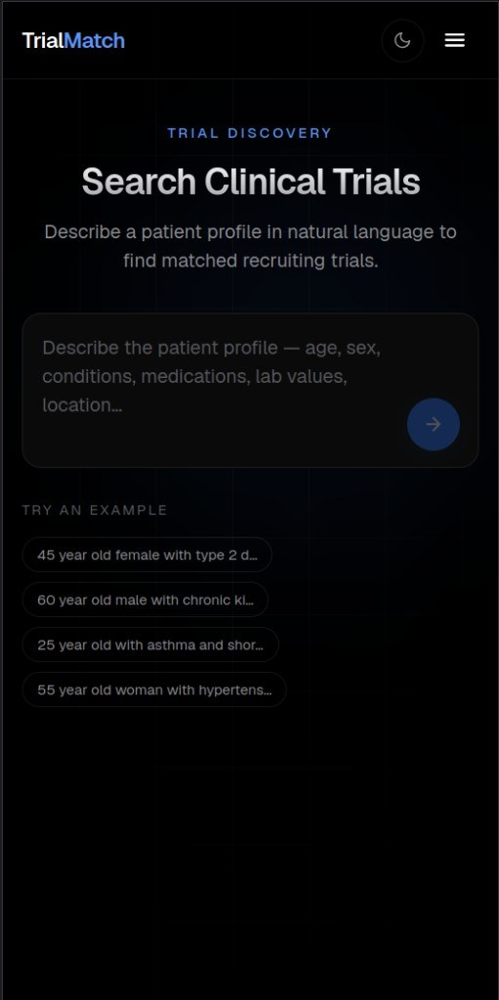
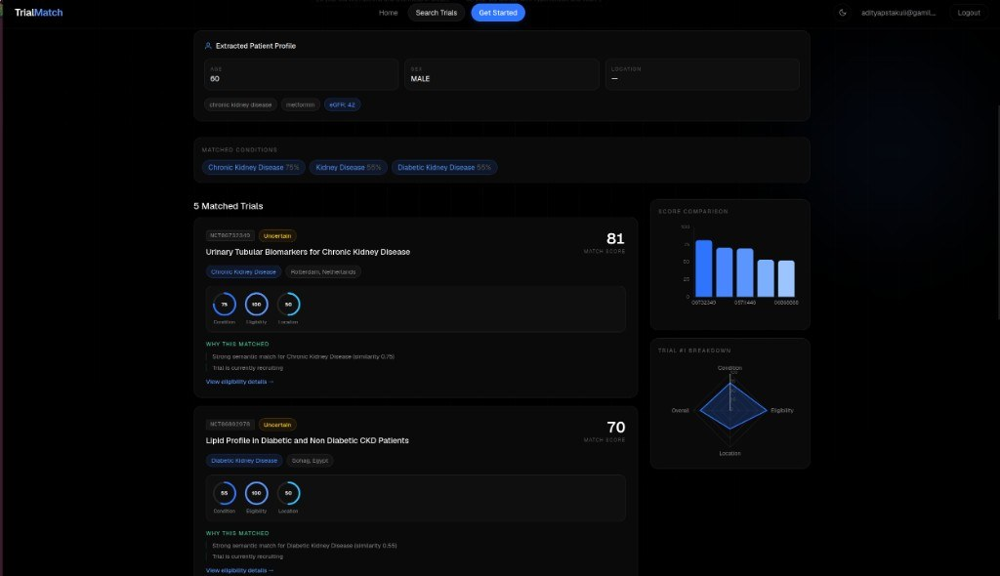
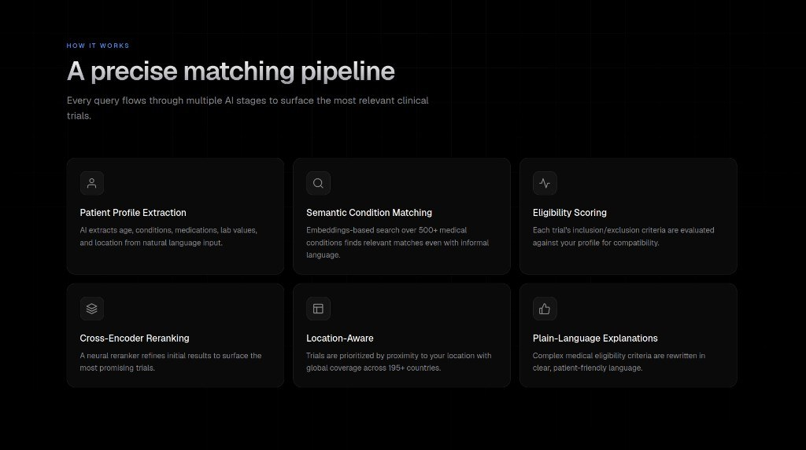

AI-powered clinical trial discovery. Patients describe their situation in plain language; TrialMatch extracts a structured patient profile, semantically matches it against a 500-condition corpus, pulls live trials from ClinicalTrials.gov, ranks them for relevance and eligibility, and explains every match in patient-friendly words.
Interface
-

Landing — WebGL globe, live trial locations -

Responsive search on mobile -

Ranked results + score breakdown -

Pipeline explainer -
500 Condition corpus, embedded
-
6 LangGraph pipeline nodes
-
195+ Countries of trial coverage
How I built it
The matching logic runs as a LangGraph state machine — six nodes, one shared state object. Splitting it this way meant every stage could be tested, swapped and debugged in isolation instead of living inside one prompt.
-
01
Extract query
Parse the raw free-text input into a normalised query object.
-
02
Patient profile
Pull out age, sex, location, medications, lab values and symptoms as structured fields.
-
03
Semantic match
Embed the query and cosine-match it against a 500-condition corpus, so informal phrasing still lands on the right condition.
-
04
Fetch trials
Query the ClinicalTrials.gov API per matched condition.
-
05
Filter & rank
Deduplicate, check eligibility, then score on similarity, age/sex criteria, proximity, recruitment status and recency.
-
06
Explain eligibility
Rewrite dense inclusion/exclusion criteria into plain language the patient can act on.
Architecture
-
Frontend — Next.js
- Pages — /, /search, /login, /register
- Auth — JWT held client-side, authFetch wrapper
- Proxy — /api/* rewritten to FastAPI
- Visuals — Framer Motion, Recharts, three.js globe
-
Backend — FastAPI
- API only — no static files served
- Auth — Argon2 hashing, HS256 JWT, OAuth2 Bearer
- Users — search history, saved trials
- Guards — 30 req/min per user, per-user isolation
-
Data layer
- PostgreSQL — users, search_history, saved_trials
- Redis — query-keyed result cache, 1h TTL
- ClinicalTrials.gov — fetched live, never persisted
- Groq LLM — extraction and explanation calls
Engineering decisions
-
Model loading was the real bottleneck, not inference
Requests were timing out and OOM-ing mid-flight on a 512 MB host because the embedding model was being pulled from Hugging Face on the request path. I baked MiniLM into the Docker image, forced offline mode, and loaded it once per process — cold start pays the cost, requests don't.
-
The neural reranker ships disabled
A cross-encoder reranker measurably sharpens the top results, but a second model doesn't fit in free-tier memory. It is feature-flagged off by default and the pipeline falls back to weighted scoring, so the app degrades gracefully instead of crashing.
-
One Redis, clear key ownership
Search results are cached by normalised query hash for an hour; rate counters are namespaced per user and window. Redis failing is a soft error — the pipeline still answers, just slower.
-
Two services, deployed independently
Next.js on Vercel, Dockerised FastAPI on Render, Postgres on Supabase's session pooler, Redis on Upstash. The frontend only ever talks to
/api/*, so the backend URL is one env var away from changing. -
Medical data means strict boundaries
Passwords are Argon2-hashed, tokens expire in 30 minutes, every user-data endpoint is scoped to the authenticated user id, and CORS origins are explicit rather than wildcarded.
Stack
-
Frontend
- Next.js 16
- React 19
- TypeScript
- Tailwind CSS 4
- Framer Motion
- Recharts
- three.js
-
Backend
- FastAPI
- Uvicorn
- Pydantic v2
- SQLAlchemy 2.0
-
AI pipeline
- LangGraph
- sentence-transformers
- Groq LLM
- Cross-encoder rerank
-
Data & infra
- PostgreSQL 16
- Redis 8
- Docker
- Vercel
- Render
-
Auth
- Argon2 (pwdlib)
- JWT (python-jose)
- OAuth2 Bearer